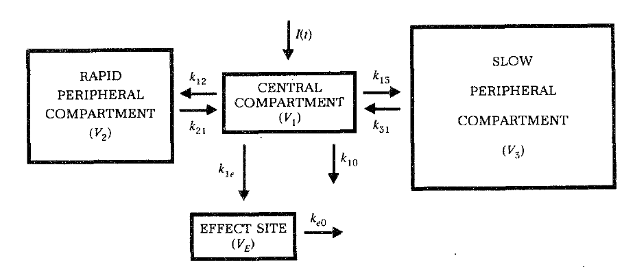

What
Target controlled infusion (TCI) is a technique where the infusion of drugs is controlled in real time by algorithms to achieve quickly and safely, without overshoot, the desire concentration of drug in a patients blood and / or at the effect site of the drug. This technique, while not limited to anesthesia, has seen wide application only in the perioperative setting where anesthesia related drugs are infused to obtain a stable sedation when total intravenous anesthesia (TIVA) is used.
TCI is based on pharmacometric models called PKPD models for pharmacokinetic-pharmacodynamic models. These models describe the drug distribution and metabolism through the body (pharmacokinetics) and the effect of the drug on the body (pharmacodynamics). Most of the time, the effect will be the level of sedation but this is not mandatory. From the first uses of TCI in the 1980s1 to today, a lot of effort has gone into the development of new PKPD models. These models are now available for nearly every drug used for anesthesia. A lot of literature is available on PKPD models and model design and a lot of software is available to build and fit these models. The best known software is NONMEM but numerous others are available, even open source software such as nlmixr22.
Most PKPD models for anesthesia are compartmental models with 3 compartments. A1 is typically the amount of drug in the plasma. Additionally, Ce is the concentration in the “effect compartment” which drives the drug effect.
\(\frac{dA_1}{dt} = A_2 k_{21} + A_3 k_{31} - A_1(k_{10} + k_{12} + k_{13}) + \text{Infusion}\)
\(\frac{dA_2}{dt} = A_1 k_{12} - A_2 k_{21}\)
\(\frac{dA_3}{dt} = A_1 k_{13} - A_3 k_{31}\)
\(\frac{dC_e}{dt} = k_{e0}\left(\frac{A_1}{V_c} - C_e\right)\)

However, in order to use new models, these models need to be integrated in the TCI systems. Currently, there are few TCI systems available. Most are proprietary and closed source. Additionally, the algorithms used for TCI, which needs to inverse PKPD models, are less well known.
Currently, the only open source TCI software I’m aware of is the STANPUMP system from the 1990s.
In this series of blog posts, I will take a deep dive into the STANPUMP source code to try and understand the algorithms involved and see if I can implement them in a modern fashion. The aim is to understand the algorithms and have a minimal open source implementation from which to work.